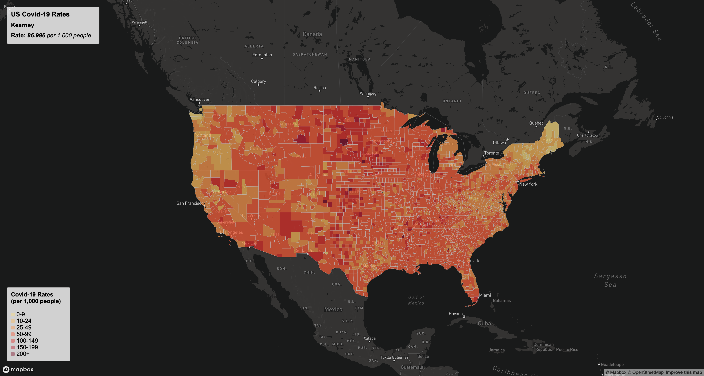
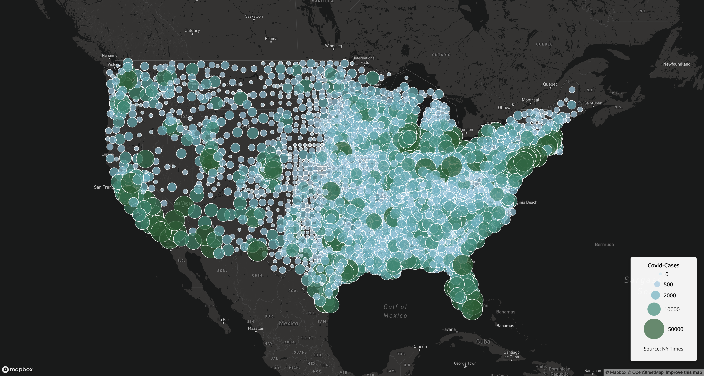
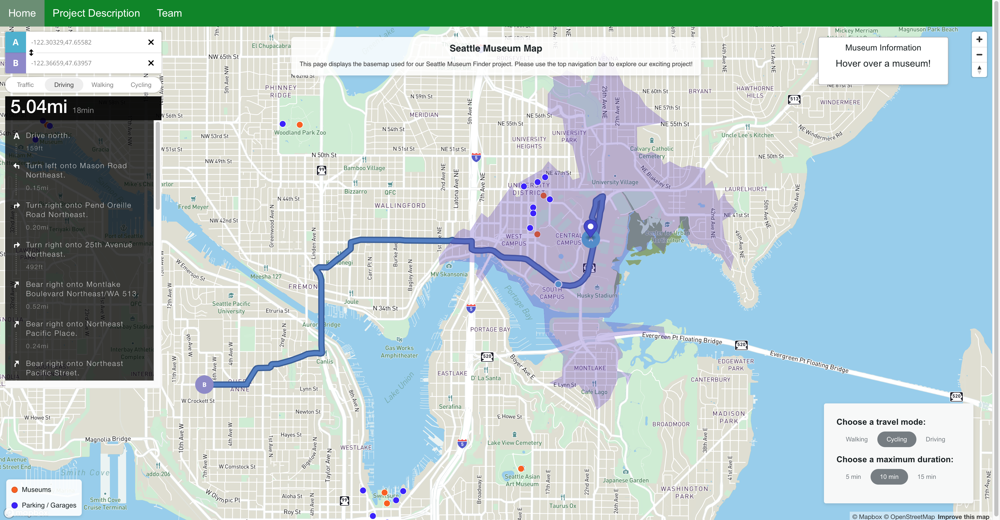

Interactive Web Mapping

COVID-19 Rates Choropleth
An interactive choropleth map of COVID-19 case rates by U.S. county using Mapbox GL JS. Counties are shaded by rate, with a legend and hover interaction that surfaces details for each location.
View Map
COVID-19 Proportional Symbols
A proportional symbol map showing total COVID-19 cases across the United States. Circle size encodes case counts, highlighting geographic patterns in the spread of the virus.
View Map
Seattle Soccer Fields
An interactive Mapbox GL JS map of Seattle soccer fields, paired with a sortable table of field names and surface types. Explore field locations and quickly scan attributes in the side panel.
View Map
Seattle Museums & Parking
An interactive Mapbox GL JS application showing Seattle museums alongside nearby parking options, including travel-time isochrones and mode selection (walking, cycling, driving) to explore accessibility.
View Map